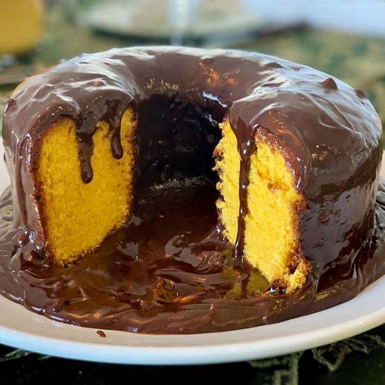

home |
bolo de cenoura |
bolo de fuba |
bolo de chocolate |
receitas de bolos
esta pagina existe para aprnder receitas de bolos
Um site de receitas de bolos dedicado a quem ama preparar doces deliciosos, com opções para todos os níveis, desde iniciantes até confeiteiros experientes. A plataforma reúne uma grande variedade de receitas, como bolos simples do dia a dia, bolos recheados, bolos de festa e versões saudáveis.
Cada receita apresenta ingredientes organizados, modo de preparo passo a passo e dicas úteis para garantir o melhor resultado. O site também pode incluir fotos atrativas dos bolos, sugestões de variações, vídeos explicativos e avaliações de outros usuários.
Com um design fácil de navegar, o site permite buscar receitas por tipo, sabor ou ocasião, tornando a experiência prática e agradável para quem deseja aprender, se inspirar ou simplesmente preparar um bolo incrível em casa.

bolo de cenoura
veja a receita completa...
receita 2

descrever a receita 2
veja a receita completa...
receita 3

descrever a receita 3
veja a receita completa...